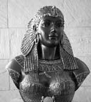

Mısır’ın son firavunu olan Kleopatra (MÖ 69-30) antik dünyanın en ünlü ve en güçlü kadınları arasında yer almaktadır. Roma iç savaşlarındaki rolü, Julius Sezar (MÖ 100-44) ve Mark Antony (MÖ 83-30) ile olan duygusul ilişkileri ve dehşet verici intiharı ile halen büyüleyici bir tarihsel figür olarak görülmektedir.

Kleopatra, Ptolemaic Hanedan’ın bir üyesi olarak doğdu. Yunanca konuşan bu hanedan, Büyük İskender’in (MÖ 356-323) Mısır’ı fethinden beri ülkeyi yönetmekteydi. 18 yaşındayken kardeşi 13. Batlamyus (MÖ 61-47) ile birlikte müştereken tahta geçmiştir.
Kardeşler tahta geçmelerinin ardından birbirleriyle evlendiler. (Bu tarz ensest birleşmeler Antik Mısır kraliyet ailesinde hiç de nadir değildi. Aslında Kleopatra’nın annesi de babasının yeğeniydi) Kardeşler gücü tek başlarına ele geçirebilmek için birbirlerinin ardından dolaplar çeviriyorlardı. Bu mücadele MÖ 50 yılında Kleopatra’nın sürgüne gönderilmesi ile son buldu.
MÖ 48 yılında Kleopatra’nın Sezar’la olan ilişkisi başlamıştır. Sezar, Batlamyus ile olan savaşında Kleopatra’nın safında yer aldı. Sevgilisinin yardımıyla Kleopatra yeniden tahta geçmiştir. Batlamyus ise savaşta ölmüş ve böylece Kleopatra tahtı küçük kardeşi 14. Batlamyus (MÖ 59-44) ile paylaşmaya başlamıştır. 14. Batlamyus daha sonra Romalılar’dan kaçarken Nil’e düştüğünde boğularak ölecektir. Kleopatra MÖ 47 yılında Sezar’dan bir erkek çocuk doğurur ve adını Sezarion (MÖ 47-30) koyar.
Kleopatra, oğlunun Sezar’ın varisi olmasını istemişti. Ne var ki diktatörün MÖ 44 yılında ölümünün ardından Sezar’ın evlatlığı olan Octavian (MÖ 63-MS 14), Antony ve bir başka generalle birlikte ülkeyi yönetmeye başladı. Antony ve Kleopatra bundan sonra sevgili olmuşlar Roma’ya tek başlarına hakim olabilmek için Octavian’a karşı komplolar kurmuşlardır.
Octavian, MÖ 31 yılında Antony ve Kleopatra ile savaşmaya başlamış ve Actium Savaşı’nda donanmalarını yenilgiye uğratmıştır. Kısa bir süre sonra sevgililer intihar etmişlerdir. Kleopatra’nın bir engerek yılanına göğsünü sokturduğu söylenmektedir. William Shakespeare (1564-1616) en meşhur trajedilerden biri olan Antonius ve Kleopatra’da (1609) bu ilişkiyi konu almıştır.
Kleopatra Mısır firavunlarının sonuncusuydu. 3 bin yıllık bir zincirin son halkasıydı. Bundan sonra Mısır, Aegyptus adıyla bir Roma eyaleti olacak ve 20. yy’a kadar tam bağımsız olamayacaktır.
Ek Bilgiler
1- Kleopatra aslında aynı adı taşıyan 7. Mısır kraliçesidir. 1. Kleopatra MÖ 180-176 yılları arasında hüküm sürmüştür.
2- Son Mısır kraliçesi “Cleopatra” (1963) filminde Elizabeth Taylor (1932-) tarafından canlandırılmıştır. Taylor’un filmde oynamak için aldığı 7 milyon dolar dönemin Hollywood rekorlarının arasına girmiştir.
3- Kleopatra’nın dört çocuğu vardı. Biri Sezar’dan diğer üçü ise Mark Antony’dendi. Sezarion, Octavian tarafından idam edilmiş ve diğer üçü de tutuklanmıştır. Çocuklar Octivian’ın zafer yürüşünde Roma sokaklarında gezdirilmişlerdir. Bu çocuklar daha sonra yanlarına verildikleri aileler tarafından yetiştirilmişlerdir.